9 Landscape metrics and fragments
The metrics in this chapter are computed on the original map grid, without reprojection. Areas and edges are measured on the ellipsoid, and there is no need to specify a UTM zone.
Metrics per year
biomastats_metrics() reclassifies the maps to the classes of interest and,
year by year, computes area, edges, number of fragments and the aggregation
index. Let us follow the forest formation:
metrics <- biomastats_metrics(maps, classes = 3, metrics = "keep.all", language = "en")
metrics$ai_plot
metrics$fragments_number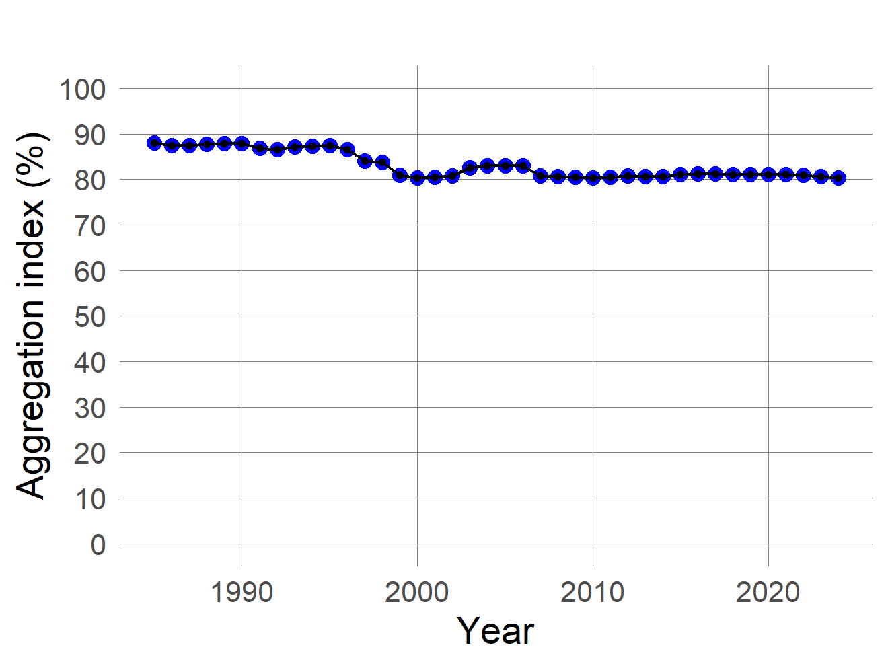
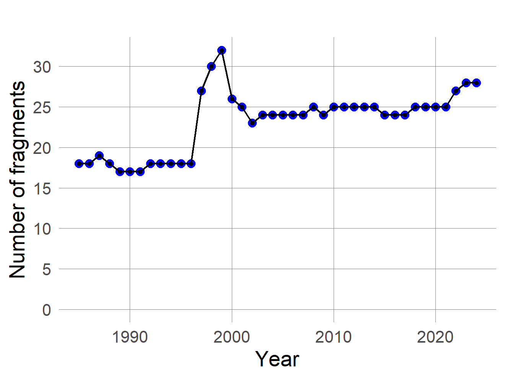
The other plots follow the class area, mean fragment area, edge length and edge density:
metrics$area_plot
metrics$frag_avg_area
metrics$egde_lenght_plot
metrics$edge_density_plot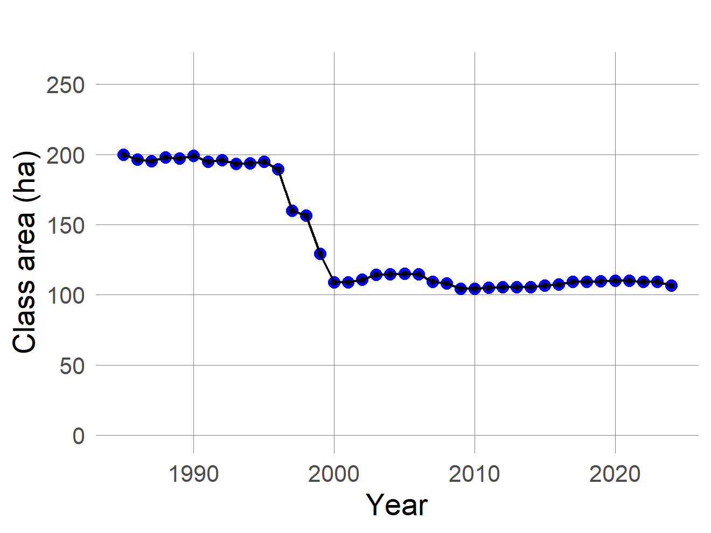
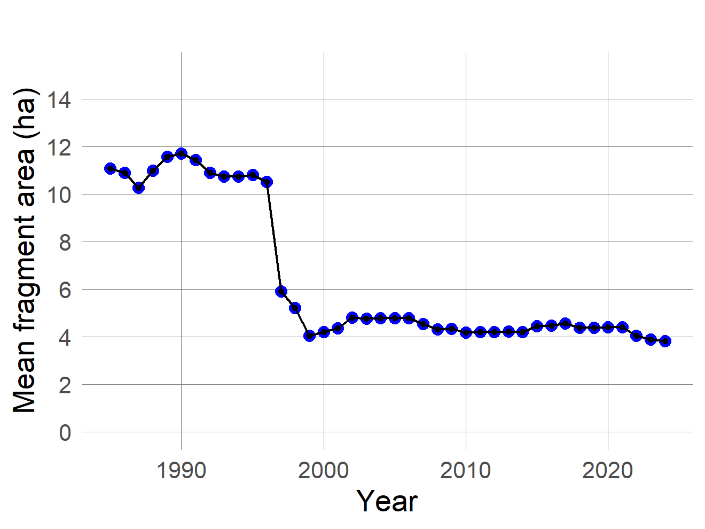
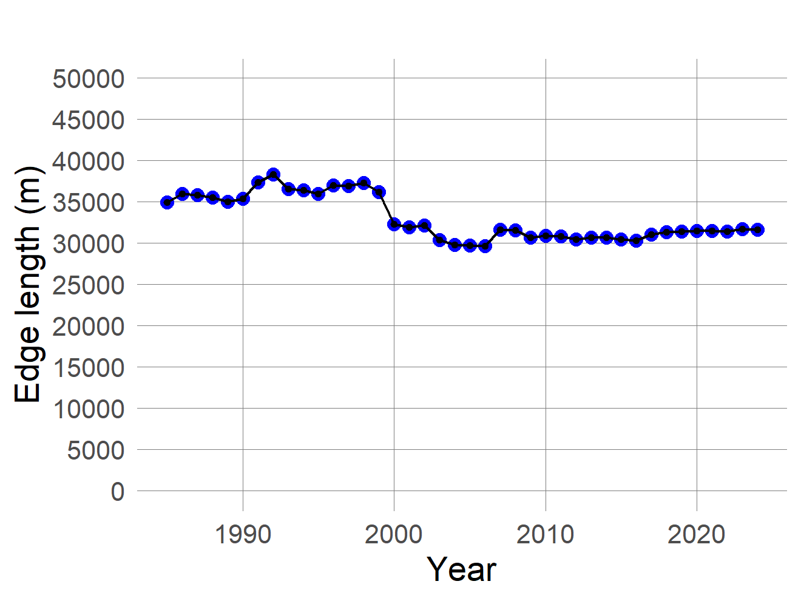
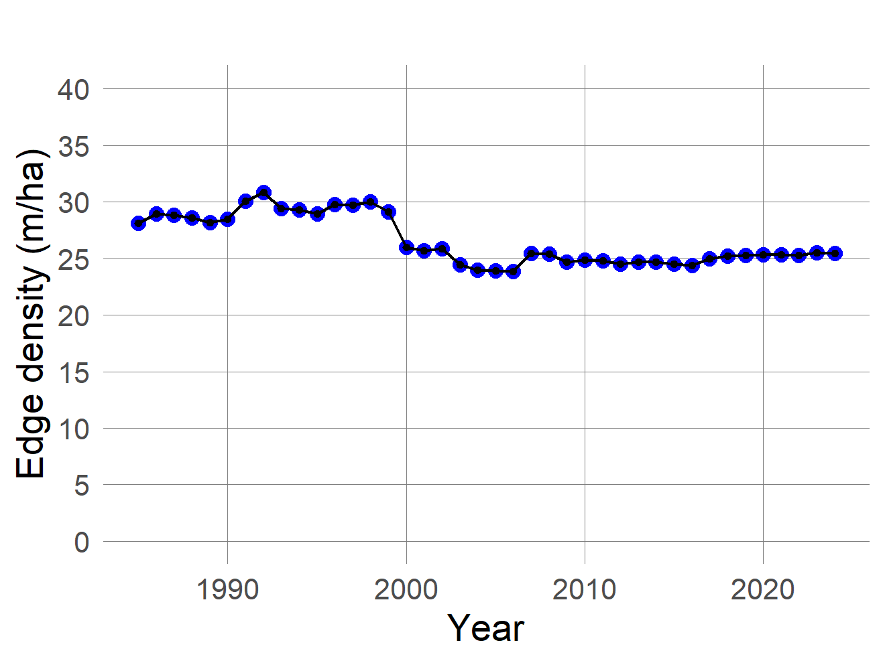
Besides shrinking, the forest became more fragmented: the number of fragments
went from 18 to 28,
and the aggregation index fell from 88% to
80%. The full table is in
metrics$metrics_table; for a single map, use lulc_metrics().
reclass_map() highlights the selected class against the rest of the
landscape:
reclass_map(metrics, year = 1985)
reclass_map(metrics, year = 2024)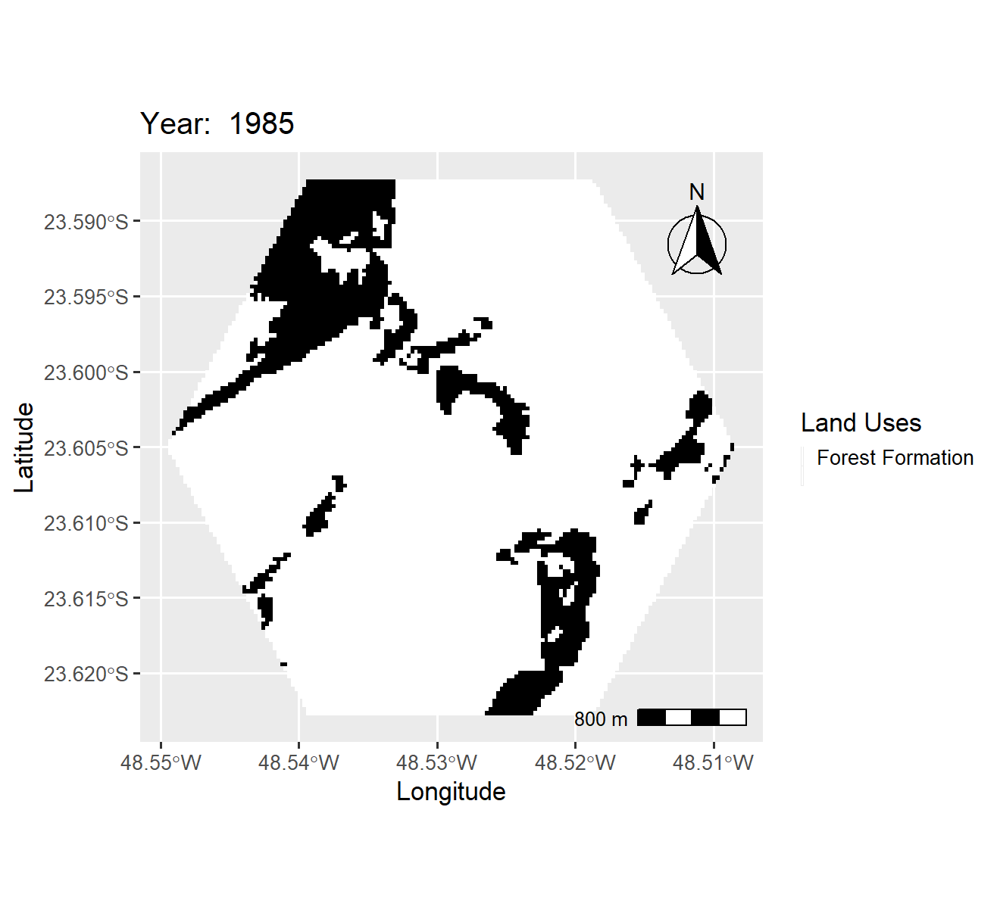
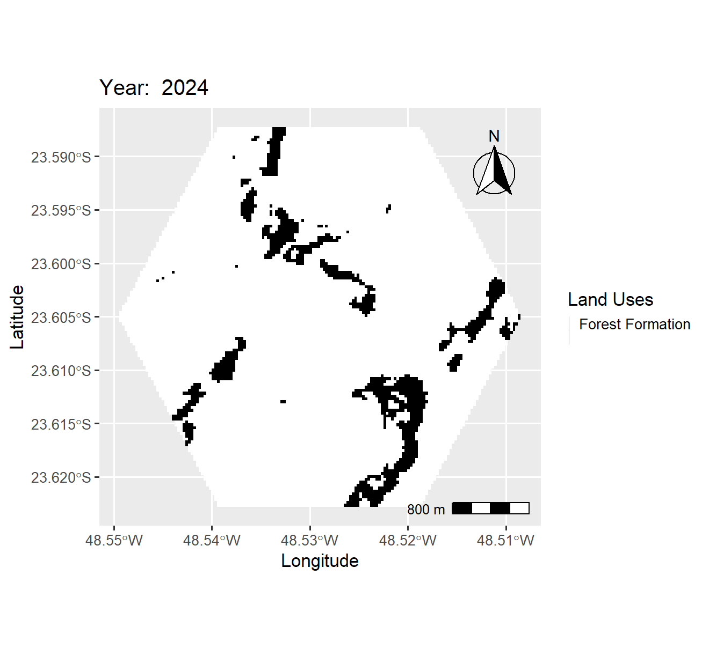
Fragments
fragment_metrics() goes down to the level of each fragment. For every one, it
measures area, perimeter, core area, shape, fractal dimension, centroid,
elongation and distance to the nearest neighbour; for each class and year, it
summarises the size distribution:
fragments <- fragment_metrics(maps, classes = 3, years = c(1985, 2004, 2024),
language = "en")
fragments$plots$map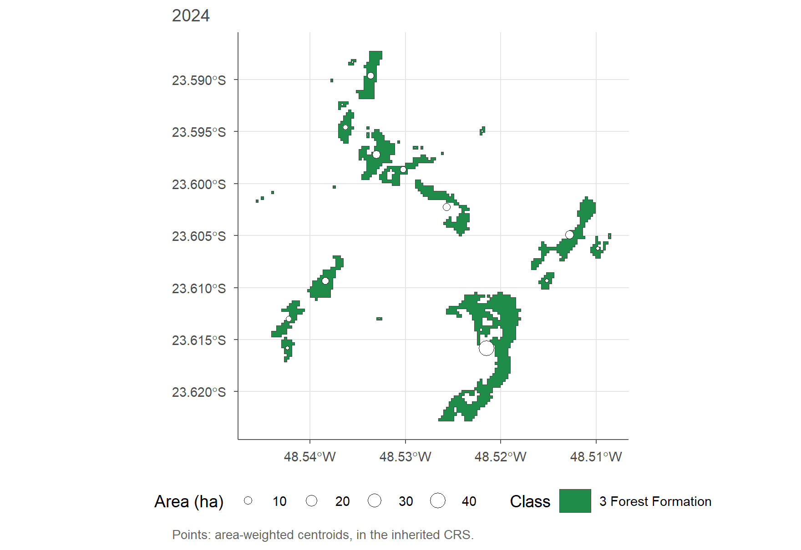
| Year | Fragments | Area (ha) | Mean area (ha) | Median area (ha) | Largest fragment (% of landscape) | Gini | Nearest neighbour, median (m) |
|---|---|---|---|---|---|---|---|
| 1985 | 18 | 199.74 | 11.10 | 1.35 | 8.59 | 0.80 | 27.46 |
| 2004 | 24 | 114.76 | 4.78 | 0.78 | 3.90 | 0.74 | 46.27 |
| 2024 | 28 | 106.72 | 3.81 | 0.33 | 3.23 | 0.75 | 40.65 |
The average fragment shrank from 11.1 ha to
3.8 ha, and the largest one, which covered
8.6% of the landscape, now covers 3.2%. Size
inequality (Gini) remains high, meaning that a few fragments hold most of the
forest. The data for each fragment are in fragments$patches.
Size and shape of the fragments
The summary indicators can be followed over time in a single panel:
fragments$plots$trend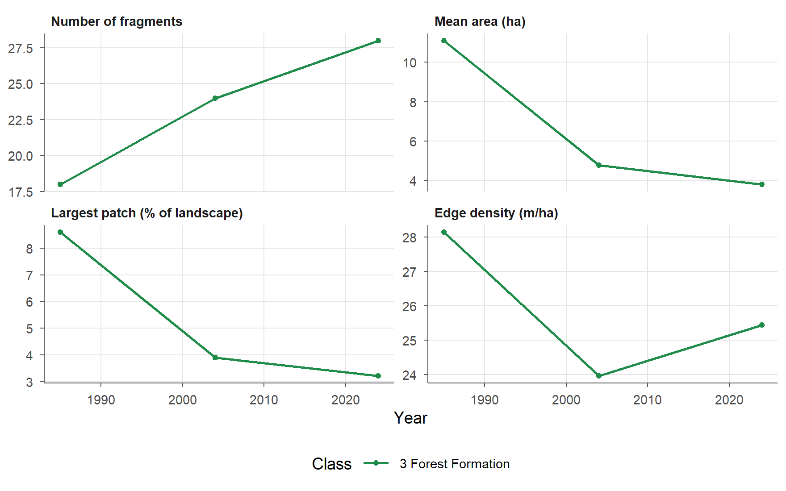
The size distribution and the rank-size curve show how area is concentrated: few large fragments and many small ones. The shape index (1 for the most compact shape) separates compact fragments from elongated or branched ones, which have more edge per hectare:
fragments$plots$size_distribution
fragments$plots$rank_size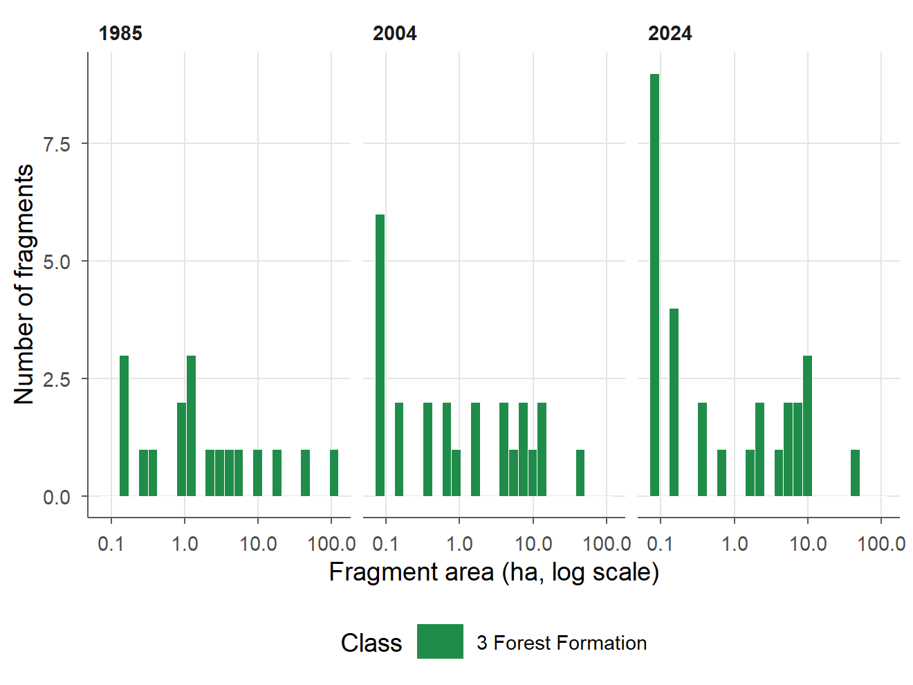
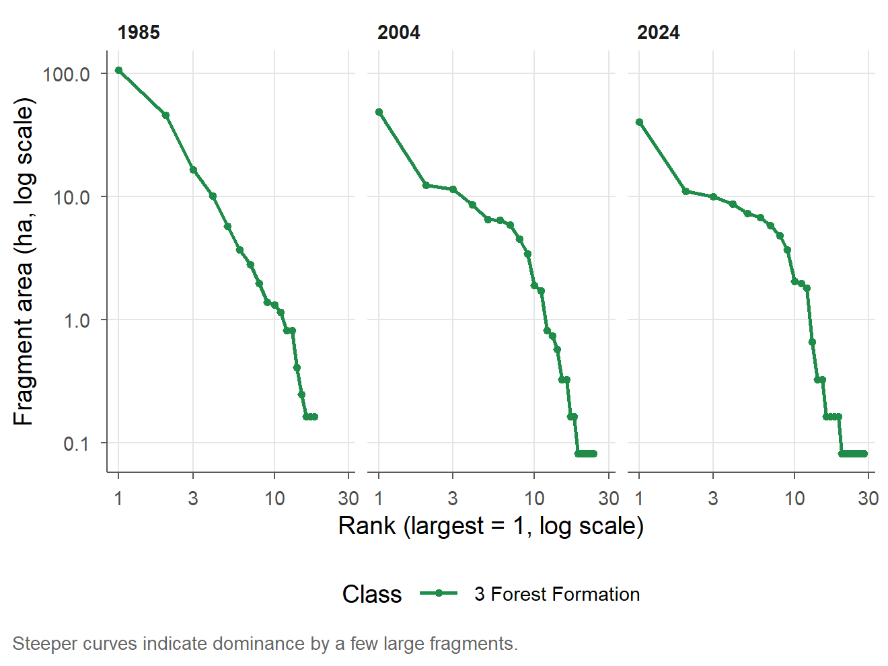
fragments$plots$shape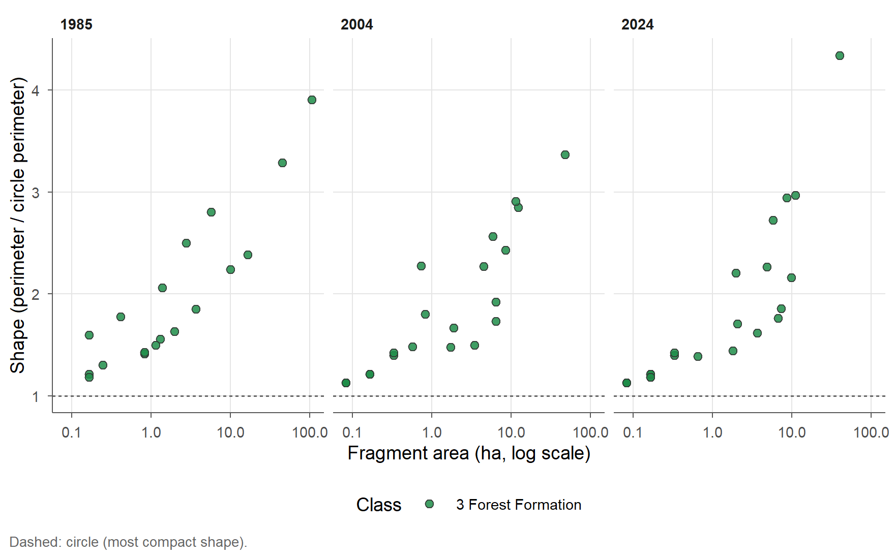
fragments$lsm adds class metrics from the landscapemetrics package, computed
on the same grid: aggregation (ai), clumpiness (clumpy) and cohesion
(cohesion):
| Year | ai | clumpy | cohesion |
|---|---|---|---|
| 1985 | 88.06 | 0.86 | 96.18 |
| 2004 | 82.98 | 0.81 | 92.92 |
| 2024 | 80.33 | 0.78 | 92.65 |